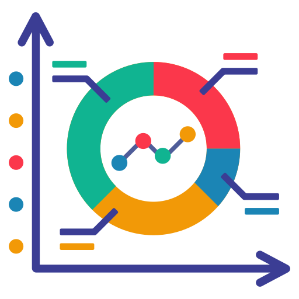

Selamat Datang di FinFlow
Platform ini dirancang untuk membantu Anda memahami tren suku bunga terkini dan melakukan simulasi cicilan berdasarkan data yang Anda masukkan.
FinFlow adalah platform digital inovatif yang dirancang untuk membantu Anda memahami dan mengelola keuangan Anda dengan lebih baik, khususnya dalam hal suku bunga dan pinjaman. Kami menyediakan informasi terkini tentang pergerakan suku bunga di Indonesia dan menawarkan simulasi perhitungan cicilan yang mudah digunakan, baik untuk Kredit Pemilikan Rumah (KPR) maupun pinjaman bersubsidi.
Misi Kami: Memberikan transparansi dan kemudahan akses terhadap informasi keuangan, sehingga setiap pengguna dapat mengambil keputusan finansial yang lebih cerdas dan terinformasi.
Apa yang Kami Tawarkan?
- Analisis Real-Time: Akses ke data pergerakan suku bunga terkini yang disajikan dalam grafik interaktif.
- Simulasi Cicilan: Alat simulasi yang membantu Anda menghitung cicilan bulanan berdasarkan jumlah pinjaman, tenor, dan tingkat bunga.
- Pilihan Pinjaman: Dukungan untuk simulasi baik untuk KPR maupun pinjaman bersubsidi, lengkap dengan penyesuaian suku bunga.
